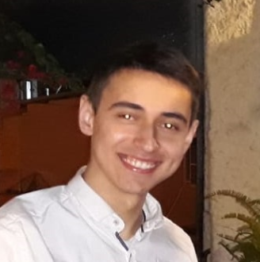

Oleg Doroshev - Resume
Phone: +972534201688
Email: rushalli2011@gmail.com
- Date of birth: 06/03/1999
- Place of birth: Russia
- D License: Yes, Grade - B
- Status - Single
As a part of my responsibilities I was required to show excellency, to be highly tast-oriented and to be creative at solving complex problems.
I have great interpersonal skills, a high sense of serivce and the ability to handle several tasks at the same time
Military serivce
2017-2020 - Military police, border security, incarceration official.
Discharged at the rank of "First Sergeant"
Education
2011-2017 - Highschool (Makif Alef Beer Sheva | מקיף א' באר שבע)
Matriculation examinations passed with emphasis on:
- Biology
- Computer Science
- Programming
Work experience
2020-2023 - Computarized warehouse worker at "DSV solutions"
- Very small team in the "robot" area, instense flow of work in a delicate and sensitive enviorment with a requirement of being very delicate while doing a few tasks simultaneously
- Individual work at a different warehouse. Handling the same work just singlehandedly in a tense overloaded work enviorment
2019-2019 - Clerk, Stock unloadment at "Terminal Bokobza"
- "Targeting" customers and helping them choose the best option for their needs
- Accepting, sorting and dispersing the goods to the storage/shelves
Work enviorment
Highschool knowledge of Java, C# and SQL
Intermediate knowledge in Python with emphasis on
- Numpy
- Pandas
- Seaborn
- Matplotlib
- Beginner knowledge in Machine Learning
- Web scraping
Intermediate excel
High level of computer knowledge (problem solving, technical support)
Studying Web-Development atm
Languages I can speak
Hebrew: Native
English: Native
Russian: Very good